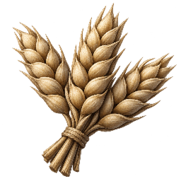
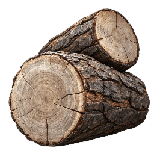
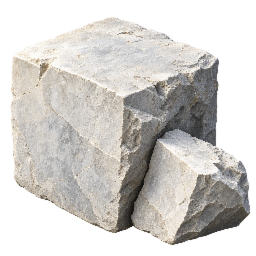
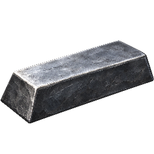

Cinematic · Ressourcensymbole
Fünf Symbole für Kopfzeile, Baukosten und Ausbildung. Oben 18 Pixel, in Kostenzeilen 13 Pixel.
Kopfzeile · 18 px

3.946/4.500 · +1.3/s
2.226/4.500 · +3.5/s
3.063/4.500 · +2.0/s
361/4.500 · +1.0/s 34/102Symbole · 13 / 18 / 64 px
NahrungHolzSteinEisenBevölkerung
Bau- und Ausbildungskosten · 13 px
260100803016060
Zum Spiel · Assets und Generierungsprompts